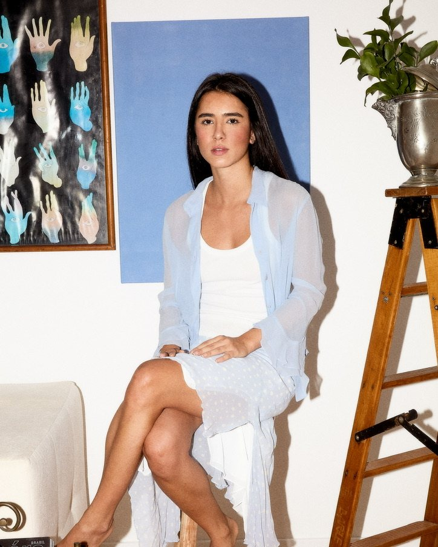

Co-founder · Strategy
Marina Paiva
She comes from the digital marketing of brands such as Schutz, Bloomberg and Genial Investimentos, where she handled events, content, seeding and campaign monitoring. She founded Verso to give brands a digital presence that only they could have.